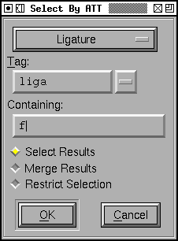

Select
By Advanced Typographic Features
This dialog allows you to select characters which:
-
are ligatures
-
In which case you may further restrict the search by specifying a ligature
tag ('liga', 'rlig', etc.) or a list of several tags ('liga rlig'). You may
also require that the ligature contain a character with the given name.
-
have a simple substitution transformation
-
In which case you may further restrict the search by specifying a ligature
tag ('onum', 'swsh', etc.) or a list of several tags ('onum swsh'). You may
also require that the substitution be to a character with the given name.
-
have an alternate substitution transformation
-
In which case you may further restrict the search by specifying a ligature
tag ('salt', 'swsh', etc.) or a list of several tags ('salt swsh'). You may
also require that at least one of the alternates be a character with the
given name.
-
have a multiple substitution transformation
-
In which case you may further restrict the search by specifying a ligature
tag ('ccmp'). You may also require that at least one of the alternates be
a character with the given name.
-
have a simple position transformation
-
In which case you may further restrict the search by specifying a ligature
tag ('lfbd', 'rtbd', etc.) or a list of several tags ('lfbd rtbd').
-
be involved in a kerning combination
-
In which case you may further restrict the search by specifying a character
it must kern with.
-
Be involved in an anchored-pair combination
-
In which case you may further restrict the search by specifying the anchor
class.
-
Have a ligature caret
There are three variants on how the search behaves:
-
The selection will be set to whatever characters match the search criteria
-
The selection will be expanded. Anything that was previously selected will
remain so, and anything that matches the search criteria will become selected.
-
The selection will be restricted. Only characters previously selected will
be searched, the selection will be restricted to those which match
So if you want to search for all ligatures containing both "f" and "i"...
Search for ligatures containing "f" with "<*> Select Results" set
Then Search for ligatures containing "i" with <*> Restrict Selection"
set
-- Prev -- TOC --
Next --